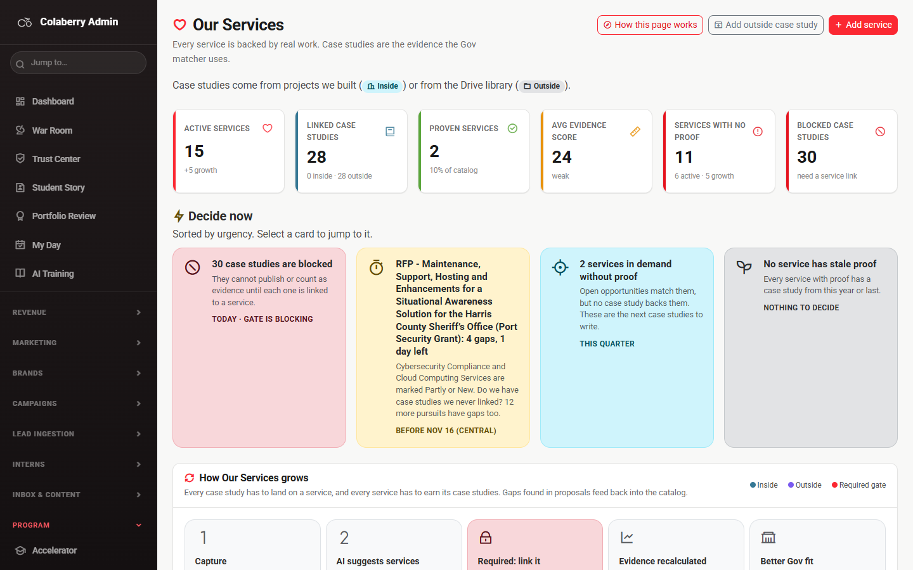
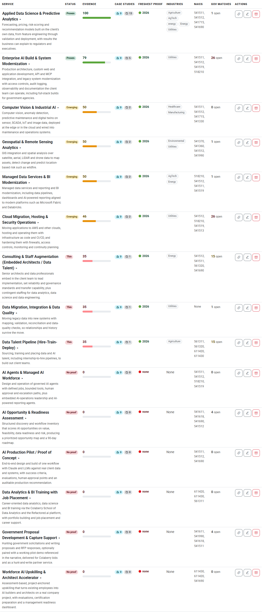
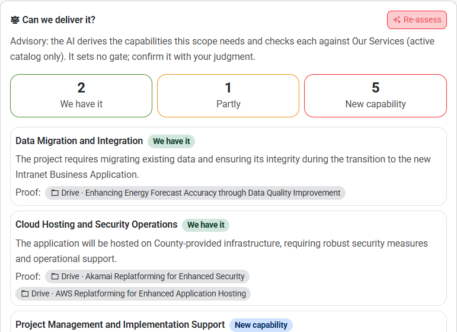

Services Upgrade: production review
Takeaway: The M3 decision (Option B) is live. Five services with confirmed case studies are now Active, and two empty services are retired. On a real county RFP, the Gov AI now answers "We have it" for data migration and for cloud hosting and names the case studies that prove it.
✅ SV1 to SV3 merged and deployed
✅ SV4.1 journey test merged (28/28)
✅ M3 applied on production
✅ Live Fit cites proof
⬜ This review doc merged
The numbers
15Active services (12 before, +5 promoted, −2 retired)
9 of 15Active services have a confirmed case study
8proof citations in the live Fit, on 2 of 5 real pursuits
6Active services still have no proof (M3 kept them)
What changed on production (15 Nov, about 12:40 PM CST)
| Service | Change | Confirmed case studies |
|---|---|---|
| Applied Data Science & Predictive Analytics | Growth → Active | 13 |
| Computer Vision & Industrial AI | Growth → Active | 2 |
| Cloud Migration, Hosting & Security Operations | Growth → Active | 2 |
| Geospatial & Remote Sensing Analytics | Growth → Active | 2 |
| Data Migration, Integration & Data Quality | Growth → Active after adding category "Data" and 7 keywords from its own description | 1 |
| Ongoing Support and Maintenance | Active → Retired (no category, no keywords, no proof) | 0 |
| Training and Documentation | Active → Retired (no category, no keywords, no proof) | 0 |
Stop 1: Our Services, top of the page
Active services: 15 (+5 growth). Services with no proof: 11 (6 active · 5 growth).
"Proven services: 2" counts only services whose evidence score is strong (Applied Data Science with 13, Enterprise AI Build with 5). The other 7 with proof are Emerging or Thin, so they are linked but still light.

Stop 2: The Active catalog
The five promoted services sit in the Active list with their evidence bars. The two retired ones are gone from it.
Look for: Applied Data Science at Proven 100 with 13 outside case studies; Computer Vision, Geospatial and Cloud Migration at Emerging; Data Migration at Thin. The 6 "No proof" rows at the bottom are the ones M3 kept.

Stop 3: The Gov AI on a real pursuit
A county Intranet Business Application RFP, Fit step, re-assessed live: 2 "We have it", 1 "Partly", 5 "New capability".
Both "We have it" answers now carry a Proof line naming the case study behind them. Data Migration is backed by the energy-forecast data-quality whitepaper, and Cloud Hosting by the Akamai and AWS replatforming whitepapers. Before today, the same pursuit was matching its generic "support" and "training" needs to the two empty services.

Gov AI before and after (5 real pursuits, 3 runs each)
| We have it | Partly | New | Proof cited | |
|---|---|---|---|---|
| Baseline, 13 Nov (before the upgrade) | 9 | 4 | 24 | not available then |
| Now, after M3 (proof rule off, as shipped) | 5 | 5 | 26 | 8 citations |
How to check it yourself
- Open Our Services. The first tile reads Active services 15.
- Scroll to the catalog. Applied Data Science & Predictive Analytics shows "Proven" and 13 case studies.
- Search the catalog for "Training and Documentation". It no longer appears under Active.
- Open Gov qualification for any pursuit that has requirements, go to Fit, and click Re-assess. That changes nothing; only "Save fit decisions" saves.
- On any "We have it" card, look for the Proof: line naming a case study.
Known gaps
- Data Migration has no NAICS codes, so the keyword-and-NAICS opportunity matcher finds it only by keywords. The Gov AI fit does not use NAICS.
- Six Active services still have no confirmed case study. M3 kept them on purpose; with the proof rule on they would show as Partly.
- The econometric whitepaper PDF still contains another paper's outcomes. The app record was cleared on 15 Nov, but the source file needs a fix.